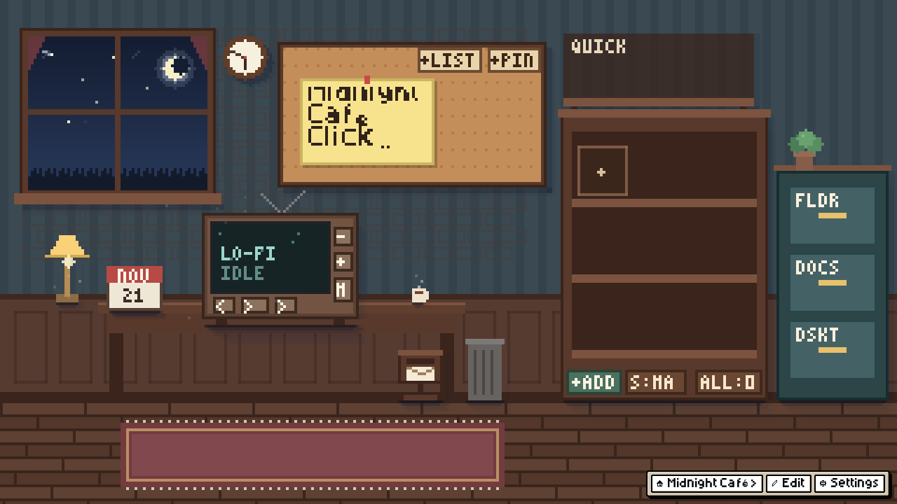

Free app for Windows 10 and 11
Download BitDesktop
Choose the x64 installer for Start menu shortcuts, or extract the portable ZIP and run BitDesktop from the folder.
Checking GitHub for the latest release…

Install and verify
BitDesktop installs per user and saves room data in %LOCALAPPDATA%\BitDesktop.
Windows SmartScreen
Windows may show a warning for an unsigned build. Check that the download came from the official GitHub release and verify its checksum before running it.
Release checksums
Use PowerShell to calculate the SHA-256 hash of your download. Compare the result with the checksum file on GitHub.